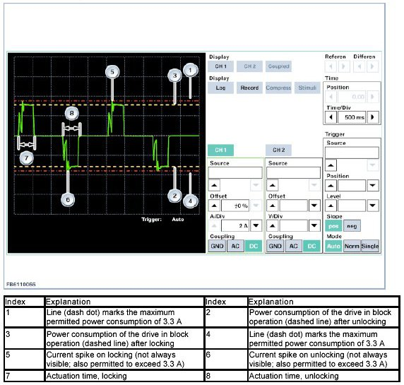
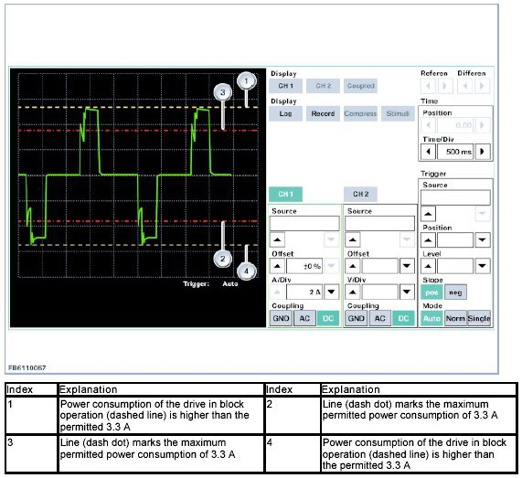
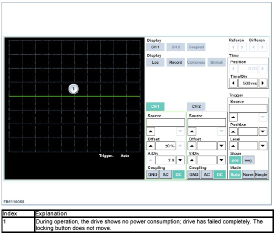
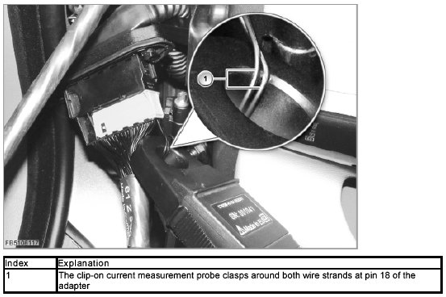

Oscilloscope Patterns and Waveforms
Oscilloscope Measurement On System Locks
A door lock with preliminary damage cannot be distinguished from an intact door lock. At the moment, a door lock with preliminary damage remains fully functional, with there is a high probability that it will fail. No intact door lock may be renewed. A door lock with preliminary damage must be renewed. The preliminary damage to a door lock can only be determined by measuring the power characteristic curve using an oscilloscope.
Requirements
The fuse for the central locking system F57 (up to 09/07) or F73 (as of 09/07) must be renewed. The 15 A fuse is to be renewed by a 20 A fuse. Use a 20 A fuse, even if a 15 A fuse is still indicated on the circuit diagram or on the fuse board.
IMPORTANT:
A door lock may only be renewed if its failure or preliminary damage has been determined beyond doubt by means of an oscilloscope measurement.
It is possible that simply replacing the 15 A fuse with a 20 A fuse is effective.
1. Procedure for preliminary damage to a door lock
Steps 1 to 10 must be carried out for each door lock that has not obviously failed after replacement of the fuse and a number of operations. Obvious failure can be seen by the fact that the locking button no longer moves.
1. At the relevant door connector (X257, X256, X274 or X273), fit adapter 612360 between the body wiring harness and door wiring harness (test card, see chapter 3).
2. Use ISID to set measurement technology for oscilloscope testing:
- Source: 100A clip-on probe
- A/Div: 2A
- Time/Div: 500 ms
Synchronizing the 100A clip-on current measurement probe. During the adjustment, the clip-on current measurement probe must not clasp around any strands of wire. The adjustment must be carried out for each individual door lock.
3. Connect the clip-on current measurement probe around the 2 wire strands of pin 18 on the adapter. The MVR cable (signal name) between the JBE control unit and door lock is measured at pin 18 of the adapter.
Test card for connection of the clip-on current measurement probe, see chapter 3.
IMPORTANT: The clip-on current measurement probe must clasp around both wire strands at pin 18 of the adapter.
4. Close the rotary striker at the relevant door lock by hand.
If the driver's door is to stand open during the test of one of the rear system locks or of the system lock on the passenger's door, the rotary catch in the driver's door must also be closed for the measurement. Important: After the measurement, open the rotary striker again by hand, as otherwise the door lock will be damaged if the door is closed with a closed rotary striker.
5. Start or switch on the measurement.
6. Use the remote control to unlock and lock the central locking system
7. Compare the measuring result with the test cards and determine whether the measured door lock is OK.
Help for evaluation of the measurement results, see chapter 2.
8. The measurement must be carried out 5 times (unlock and lock the central locking system with the remote control 5 times). If one of 5 measurements clearly indicates that there is preliminary damage to the lock, it must be renewed.
9. After the measurement, remove the adapter, reconnect the door connector and open the rotary striker by hand if it is still closed. To be able to open the rotary striker by hand, the last operation of the central locking system with the remote control must be unlocking.
10. Repeat steps 1 to 10 for the remaining door locks and adhere to the specified order.
2. Evaluation of the measurement results
The test values for minimum and maximum current draw from the central locking drive measured at the ISID must be read from the characteristic curve.
For evaluation of the characteristic curve, the measured power consumption of the central locking drive must be examined in block operation. The power consumption in block operation must not exceed 3.3 A.
A current spike above 3.3 A on starting the central locking drive is permitted and is the normal operating condition. The central locking drive is activated for 500 ms. A tolerance in the actuation time of +/- 50 ms is permitted and the normal operating condition.
The following graphic illustration shows the current curves corresponding to intact and defective central locking drives.
The following graphic illustration portrays the current curves for a lock engagement and a lock disengagement process.
Depending on how the clip-on current measurement probe was connected around the two wire strands, the measuring result can be turned around 180 degrees. Either connect the clip-on current measurement probe the other way around or evaluate the characteristic curve offset by 180 degrees.
2.1 Power characteristic curve of an intact door lock
Illustration: Measuring result of an intact door lock

2.2 Power characteristic curve on door locks with preliminary damage
Illustration: Measuring result of a door lock with preliminary damage

Illustration: Measuring result of a door lock that has failed completely

3. Comparison illustration for connecting the adapter and the clip on current measurement probe.
Illustration: Adapter on door connector with connected clip-on current measurement probe
